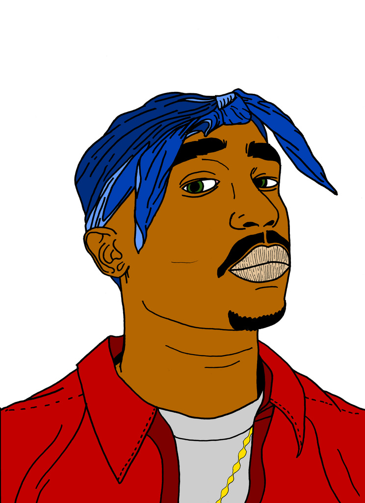

My first love of music lies below. Hip-Hop captured my story in several different ways that demanded attention. More importantly, I found the perfect compliment to my horns, Drums! The perfect storm was found in a place where both horn and drum exercise their potential. 